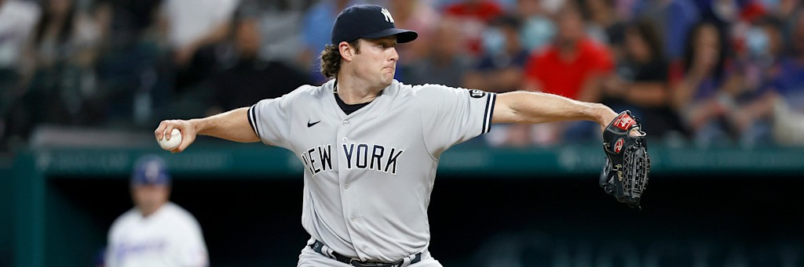

The game was tied 3-3 at Camden Yards last night when Heliot Ramos reached in the eighth and George Lombard Jr. put a ground ball single past Coby Mayo to score him. Two runs crossed in that inning. New York won 5-3, took its second game of the series, and left Baltimore on a three game losing streak.
The Yankees have now beaten the Orioles seven times in nine regular season meetings this year. Across those nine games they have outscored Baltimore 55 to 26. Tonight the market makes them a 51.7 percent favorite.
That is the entire piece. One play on the card, and the argument for it is not a stat line or a trend. It is the distance between a number the market published and a number the season has been printing since the first week of May.
| Play | Line | Odds | Stake | Game |
|---|---|---|---|---|
| New York Yankees moneyline | Moneyline | -107 | 1 unit | NYY at BAL, 6:35 PM ET, Oriole Park at Camden Yards |
One position, one unit, logged on the BetLegend record at TrustMyRecord as ticket TMR-0004612 at that exact price. There is no second play on this board and no correlated total attached to it. Nine games are on the schedule today and eight of them are being passed.
Start with what the number is. A price of -107 needs the bet to win 51.69 percent of the time to break even. Strip the vig off a two way market priced near that and the market's honest opinion of the Yankees lands a shade under 51 percent.
Now build the same number from the standings, using the oldest method there is. Log5 takes two winning percentages and returns the probability that one club beats the other on neutral ground. New York is 71-55, a .563 clip. Baltimore is 61-66, .480. Feed those in and the Yankees come out at 58.3 percent. Baseball's home field edge is worth roughly three and a half points, so shift it back for the road and the estimate sits near 54.8 percent.
Run it again on run differential instead of record, because run differential is the more stable of the two this deep into a season. New York has scored 559 and allowed 470, which projects to a .586 team. Baltimore has scored 573 and allowed 604, which projects to .474. Log5 on those figures returns 61.1 percent for the Yankees, or about 57.6 percent after the road adjustment.
Three points of edge is not a windfall. It is a bet you take at one unit and do not talk yourself into two.
Head to head results are usually noise. Nine games is a small sample and 2026 has been a strange year in the AL East. This particular sample is worth a look anyway, because of how lopsided it is and because of where the games were played.
New York swept the four game set at Yankee Stadium in early May by scores of 7-2, 9-4, 11-3 and 12-1. Baltimore took two of three at Camden the following week, winning 3-2 and 7-0 and losing 6-2 in between. Then came Tuesday and Wednesday of this week, 3-1 and 5-3, both in Baltimore.
Seven wins, two losses, 55 runs to 26.
Gerrit Cole has walked 19 hitters in 86.2 innings this season. That is 1.97 per nine. Kyle Bradish has walked 58 in 133.0 innings, 3.92 per nine. The ratio is almost precisely two to one, and it holds up when you split it by venue, which matters because tonight is a Bradish home start.
| 2026 season | Gerrit Cole | Kyle Bradish |
|---|---|---|
| Record | 6-6 | 7-11 |
| ERA | 3.22 | 3.65 |
| Innings, starts | 86.2 in 15 | 133.0 in 24 |
| WHIP | 1.08 | 1.36 |
| K per 9 | 9.55 | 8.39 |
| BB per 9 | 1.97 | 3.92 |
| Opponent average | .227 | .248 |
Bradish at Camden Yards this year: 59.1 innings, 3.34 ERA, 1.16 WHIP, and 29 walks. Twenty nine free passes in 59.1 innings is a 4.40 rate, higher than his season mark, in the park where he is supposed to be most comfortable. Cole on the road: 44.1 innings, 3.25 ERA, 1.29 WHIP, 12 walks.
The strikeouts have gone the same direction. Bradish has 14 punchouts across his last four starts covering 19.2 innings. Cole has 37 across his last five covering 31.2, with seven walks and seven earned runs in that span, a 1.99 ERA. His most recent turn was six innings and one earned run against Toronto on August 14.

Cole has issued 19 walks in 86.2 innings this season, a rate of 1.97 per nine.
New York is 40-28 away from the Bronx and 31-27 inside it. Only the Dodgers have a better road record in baseball, and the Yankees are two games clear of the third best mark. A team that plays better on the road is not a mystical quality, but it does remove the usual reason to shade a price toward the home side.
Behind Cole tonight is the best pitching staff in the sport by both of the measures that count. New York has allowed 470 runs, fewer than any of the other 29 clubs, and its 3.24 team ERA is also the lowest in baseball. Baltimore has allowed 604 runs and carries a 4.23 ERA, which ranks 19th. That is a 134 run gap over five months of an identical schedule length.
Run differential puts New York sixth in the majors at plus 89. Baltimore sits eighteenth at minus 31.
The first problem is Cole's workload. Fifteen starts and 86.2 innings is 5.8 per outing, and he has not finished a seventh inning even once this year. Whatever this game becomes after the sixth belongs to the bullpen, and a moneyline is a bet on nine innings, not on six good ones.
The second problem is the shape of the Baltimore lineup. The Orioles have drawn 488 walks, third most in baseball behind only the Cubs and the Brewers. Cole's entire advantage tonight is command, and a patient lineup at a park that plays to the pull side is the exact profile built to run his pitch count into the fifth. Baltimore does not have to hit him. It has to make him throw.
The third problem is the Yankees offense, which is bad. New York is hitting .229 with a .308 on base percentage and a .715 OPS, seventeenth in the majors. Baltimore is ahead of them on all three at .236 and .320 and .718, and has scored 14 more runs on the season. Every argument on this page is a run prevention argument, because the hitting argument does not exist.
The fourth is that Bradish has beaten his process before. A 3.65 ERA out of a 1.36 WHIP and a 3.92 walk rate is a pitcher outperforming his peripherals, and he has been doing it for 24 starts. Calling that luck is easy from a keyboard and has not cashed a ticket yet.
The last one is the honest one. New York is 16-18 in one run games this season. A price of -107 is the market telling you this game is likely to be close, and close is the environment where the Yankees have been below .500 all year. Tuesday was a two run game. Wednesday was a two run game decided in the eighth. If tonight is a third, the run prevention edge shrinks to almost nothing and the whole thing turns on one swing or one bullpen decision.
Baltimore also has the softest of soft reasons going for it. Three straight losses at home, fifteen and a half games out, playing the club that has beaten them seven times in nine tries. Nobody prices that, and nobody should, but it exists.
One unit at -107, needing 51.69 percent, on a side that two standard estimates put between 54.8 and 57.6. That is the whole case. The Yankees do not need to be good tonight. They need the price to be wrong, and the price is reading the standings while the run column has been telling a different story since May.
Fact manifest
- Nine game schedule for August 20, 2026 with probable pitchers, venues and first pitch times; New York at Baltimore, 6:35 PM ET at Oriole Park at Camden Yards, Gerrit Cole against Kyle Bradish, gamePk 824802
- MLB Stats API schedule endpoint for 2026-08-20 hydrated with probablePitcher, team and venue, pulled this session
- Standings through August 19, 2026: Yankees 71-55 with a 40-28 road record, a 31-27 home record, a three game winning streak and a 16-18 record in one run games; Orioles 61-66 with a 32-32 home record, a three game losing streak and 15.5 games back
- MLB Stats API standings endpoint for the American League East, 2026 season, date 2026-08-19, with split records, pulled this session
- Los Angeles at 40-25 is the only road record in baseball better than New York's 40-28; Milwaukee at 36-26 is third
- MLB Stats API standings endpoint for both leagues with split records, sorted across all 30 clubs this session
- Team pitching 2026: Yankees 470 runs allowed and a 3.24 ERA, both the lowest of any team in the majors; Orioles 604 runs allowed and a 4.23 ERA, nineteenth in ERA and twenty second in runs allowed
- MLB Stats API team pitching totals for all 30 clubs, 2026 regular season, pulled and ranked this session
- Run differential: Yankees plus 89 on 559 scored and 470 allowed, sixth in the majors; Orioles minus 31 on 573 and 604, eighteenth
- MLB Stats API standings endpoint with runsScored and runsAllowed for all 30 clubs, ranked this session
- Team hitting 2026: Yankees .229 average, .308 on base, .715 OPS which is seventeenth in the majors, 457 walks, 559 runs, 173 home runs; Orioles .236, .320, .718 and sixteenth in OPS, 488 walks which is third most in baseball behind the Cubs at 544 and the Brewers at 534, 573 runs, 154 home runs
- MLB Stats API team hitting totals for all 30 clubs, 2026 regular season, pulled and ranked this session
- Gerrit Cole 2026: 6-6, 3.22 ERA, 86.2 IP, 15 starts, 92 strikeouts, 19 walks, 1.08 WHIP, 9.55 K per 9, 1.97 BB per 9, .227 opponent average; road split 3.25 ERA, 1.29 WHIP, 44.1 IP, 12 walks; last five starts 31.2 IP, 37 strikeouts, 7 walks, 7 earned runs; 6.0 IP and 1 earned run against Toronto on August 14; no start longer than 7.0 innings this season
- MLB Stats API season pitching split, home and away statSplits, and full 2026 game log for player 543037, pulled this session
- Kyle Bradish 2026: 7-11, 3.65 ERA, 133.0 IP, 24 starts, 124 strikeouts, 58 walks, 1.36 WHIP, 8.39 K per 9, 3.92 BB per 9, .248 opponent average; home split 3.34 ERA, 1.16 WHIP, 59.1 IP, 29 walks; 14 strikeouts across his last four starts covering 19.2 innings
- MLB Stats API season pitching split, home and away statSplits, and full 2026 game log for player 680694, pulled this session
- Season series: nine regular season meetings, New York 7-2, 55 runs to 26. Yankee Stadium May 1 through May 4, New York 7-2, 9-4, 11-3 and 12-1. Camden Yards May 11 through May 13, Baltimore 3-2 and 7-0 with New York 6-2 in between. Camden Yards August 18 and August 19, New York 3-1 and 5-3
- MLB Stats API schedule endpoint filtered to teamId 147 against opponentId 110 for the 2026 regular season, pulled this session; three March meetings at George M. Steinbrenner Field were spring training and are excluded
- August 19 game detail: tied 3-3 after six innings, George Lombard Jr. ground ball single past third baseman Coby Mayo scoring Heliot Ramos in a two run eighth, final 5-3, ten hits to six
- MLB Stats API linescore and live feed scoring plays for gamePk 824801, pulled this session
- Break even of 51.69 percent at -107, and the log5 outputs of 58.3 percent on records and 61.1 percent on run differential
- Direct arithmetic on the price and on the records and run totals cited above. Log5 is the standard Bill James formula. The road adjustment is a flat three and a half point shift, which is a convention rather than a measurement
- Gerrit Cole photograph
- Sports Betting Prime image library, file dated July 17 2026, verified live at its published address this session
The play, its price and its stake are the author's own posted position. It records a bet taken, not a price feed, and books may show a different number at the time you read this.
What is not checked, and cannot be:
- No ticket count or money percentage split was pulled for this game or any other. Nothing here describes where public or professional money went. Sports Betting Prime stopped publishing consensus data on July 21, 2026 and has not resumed it.
- No line movement history was pulled. The -107 shown is the entry price of the position, and no claim is made about where the number opened or how it moved.
- Lineups had not posted when this was written. Late scratches, bullpen availability, rest days and weather all postdate this page.
- The log5 estimates are estimates. They use two inputs each and know nothing about tonight's starters, the bullpens, the park or the lineups. They are offered as a check on the price, not as a projection.
- The three and a half point home field adjustment is a rule of thumb applied flat. No park specific or team specific home value was calculated for Camden Yards.
- Cole's pitch count limit, if he has one, is not published and is not estimated here.